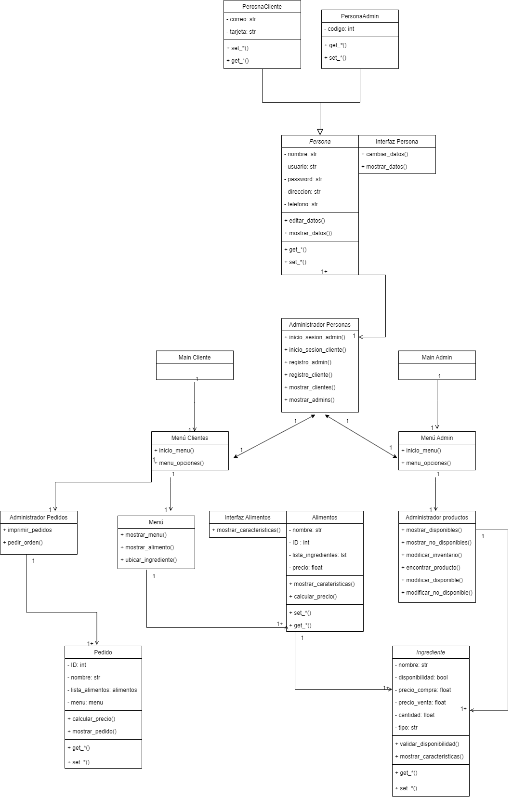
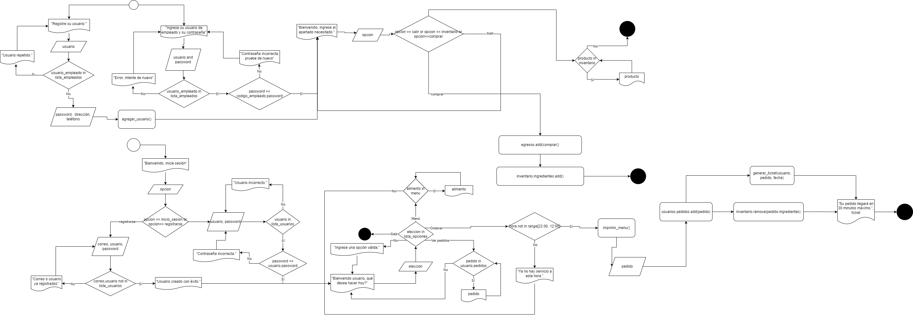
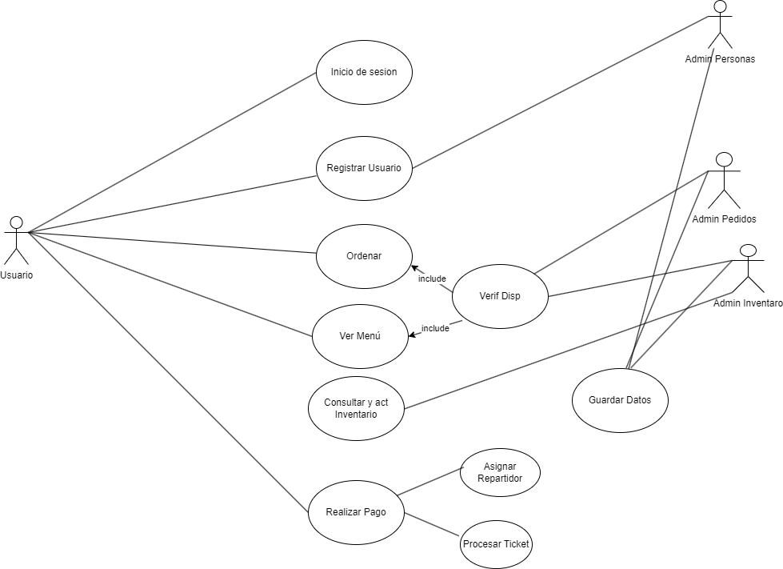

RestaurantPOO
Home
UserGuide
AdminGuide
Diagramas
CODE_Persona
CODE_Menú
CODE_Pedido
CODE_Ingrediente
CODE_Interfaces
CODE_Alimento
CODE_Admin_Producto
RestaurantPOO
Diagramas
Diagrama de clases

Diagrama de clases
Diagrama de Procesos

Diagrama de Procesos
Diagrama de Casos de Uso

Diagrama de Casos de Uso
« Previous
Next »